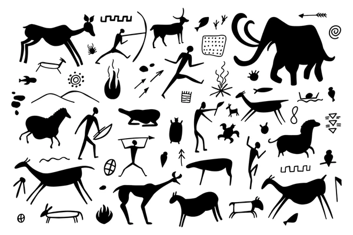
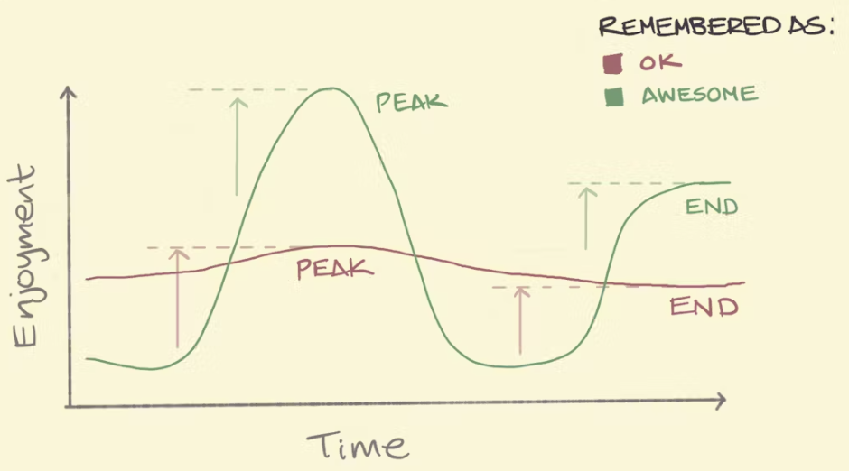
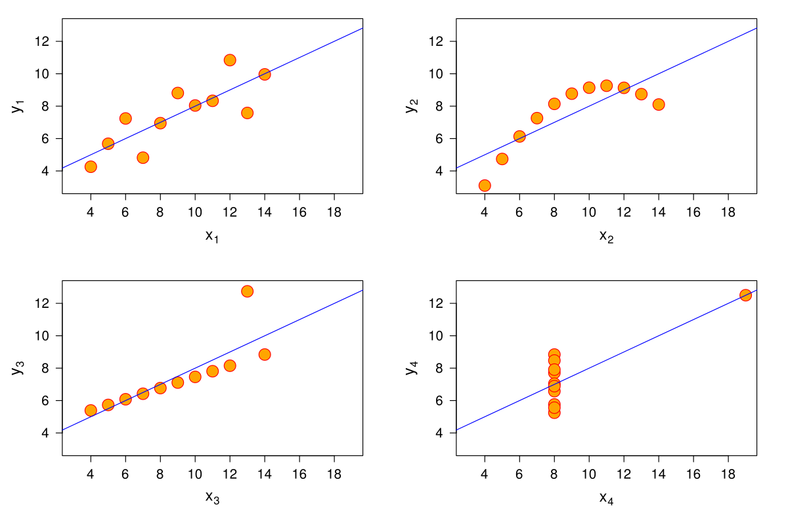

Crea, Innova y Presenta Data Storytelling + A.I.
2024-11-16
Agenda
- No
- Nope
- Jamás

¿Qué es el Storytelling?


🔥 Las historias son la primera tecnología humana
Esos cerebros tan hackables…

Regla del máximo y final (Peak-End Rule)

Rating de Game of Thrones, por Kelvin Neo
Ejemplos
 🔢 No compartas números
🔢 No compartas números
 🪶Comparte una historia
🪶Comparte una historia
(C) Storytelling with Data, por Cole Nussbaumer Knaflic.
Cuarteto de ANSCOMBE


📋 Tablas vs 📊 Gráficos
Datasaurus

Herramientas para presentación
- Clásica: PowerPoint
- “Show don’t tell”:
- quarto
- jupyter + RISE
- Streamlit
- Otros: canvas, revealjs, prezi

Streamlit
Streamlit es una herramienta de código abierto que permite crear aplicaciones web interactivas usando solo Python.

Streamlit

🎉 ¡Gracias por Participar!
🔗 Nuestro Sitio Web: seth-nut.github.io/resources.